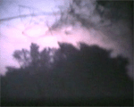
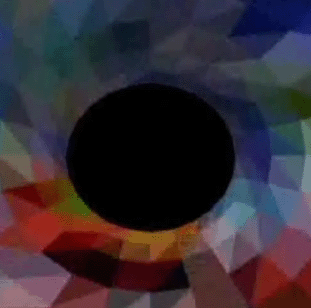
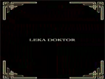
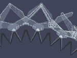

[dorkbot.org] > [dorkbot-sthlm]
home ::: about ::: archives ::: newsletters ::: links ::: contact
DORKBOT #4
september 23, 2006
This dorkbot session was organized and held in cooperation
and together with
CRAC (Creative Room for Art and Computing)
and Ersta Konsthall.
01. Rasmus Albertsen |
|
...presented his project
involving loops of old Commadore 64 tapes - that means making actual
loops with the tape, several seconds long. These tapes are be played
back on 3 (originally 6) old taperecorders from the 80'es - playing
1-3 tapes at a time, to a degree random and improvised.
|
 |
| 02. Lennart Westman | |
... a composer from the Sonic Art group, and Gunnar Jutelius (video) showed their video SPIRITUS inspired by Gustaf Fröding's poetry from 1898. The first part of the movie, Passacaglia Spiritus, has been shown around the world at various art fairs and conventions. The multicoloured visions and formations in combination with low bass surround music hypnotize and enchant spectators from the very first seconds. The movie is available with Flash 8.
|

|
| 03. Henrik Jäfvert | |
...was showing his Japanese anime-inspired flash movies about a baby lion called Rår
|
watch movie |
| 04. Martin Jonsson and Ylva Fernaeus | |
| researchers at the IT-department of Stockholm
university presented their project on new forms of alternative
human-technology interaction – interactive Erzulies Altar. How
can we create a new symbol language and rituals for a domain where spirit
and technology impregnate each other?
|
|
| 05. Mikael Goralski | |
...in cooperation with Herbert Neuwirth, Ola Hermanson, Stefan Larsson, Emil Thuvander och Gustav Wiklund from TOP 109 presented their electric shock machine. Watch also their video Playing doctor (Leka doktor).
|
 |
| 06. Klokie Grossfeld | www.surface2air.com |
| ...from the design group Surface To Air
presented his Java-powered interactive webcam system. A usual webcam
is interacting with everything that moves around it by making sounds.
|
|
| 07. Jonas Runberger | www.krets.org |
| ...and Pablo Miranda from architectural
research group Krets will present their new reactive wall paneling system SplineGraft, featuring distributed intelligence, learning algorithms and shape memory alloy/muscle wire for kinetic effect. |
 |
all materials on this website copyright 2005-2006 majken kramer overgaard and eugen krasiuk and the individual artists/presenters